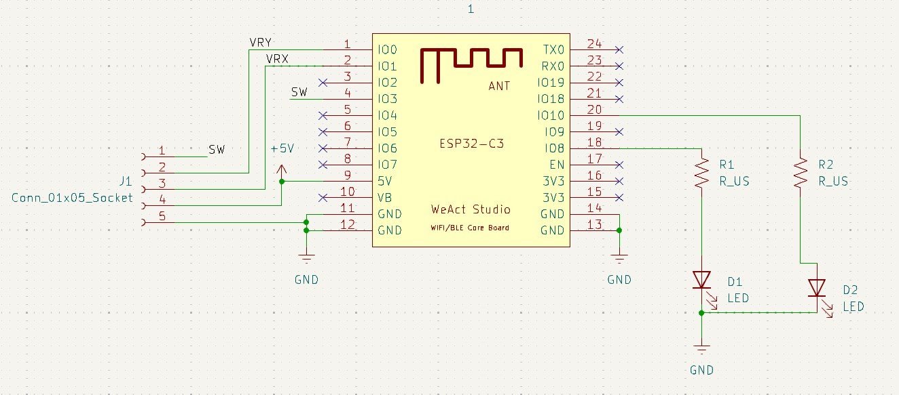

← All projects
Remote-Control Rover
PCB design · embedded firmware · soldering
- Designed a custom remote-control PCB in KiCad and hand-soldered the board as part of a year-long embedded systems program.
- Built the rover's ESP32-based control electronics, taking the system from schematic to working hardware through circuit design and bench testing.
PCB Design

Schematic — ESP32-C3 with joystick, switch, and LED indicators